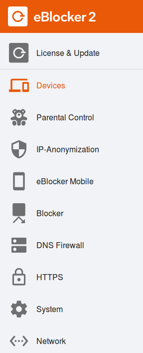

Deutsch | English
eBlocker Help > Knowledge Base > First steps
The eBlocker settings
Open the eBlocker Dashboard by entering setup.eblocker.com, or eblocker.box in your browser. On the "Settings" dashboard card click on the "Open settings" link. Alternatively, you can click on "Settings" in the eBlocker Control Bar. The eBlocker settings will open in a new browser tab.

The functions of the Settings Console are divided into the following areas.
-
License & Update (eBlocker Base, eBlocker Pro and eBlocker Family)
-
Devices (eBlocker Base, eBlocker Pro and eBlocker Family)
-
Parental Control (eBlocker Family)
-
IP-Anonymization (eBlocker Base, eBlocker Pro and eBlocker Family)
-
eBlocker Mobile (eBlocker Base, eBlocker Pro and eBlocker Family)
-
Blocker (eBlocker Pro and eBlocker Family)
-
DNS-Firewall (eBlocker Base, eBlocker Pro and eBlocker Family)
-
HTTPS (eBlocker Pro and eBlocker Family)
-
System (eBlocker Base, eBlocker Pro and eBlocker Family)
-
Network (eBlocker Base, eBlocker Pro and eBlocker Family)